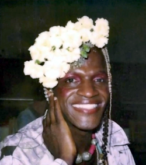
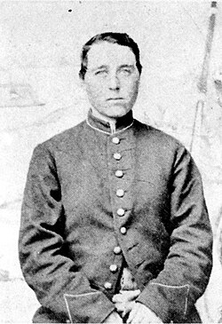

Before we begin, I would like to point out that I am not a historian. I have done my best to be as accurate as possible but I have not extensively studied any of the topics I will touch on today. I have done my best to be respectful of the cultures and times of which I speak, however I have likely gotten some of my interpretations wrong, especially through the modern Western worldview I have today. As we’ll soon learn, the term transgender is quite modern and none of the cultures or terms I’ll identify later ever cleanly map to our modern view on transgender people. For this, I apologize and if you yourself know of these topics and can correct me for future edits, please, don’t hesitate to reach out. vixen@cybervixen.dev
Now, lettuce begin.
Turn on the news for a day and you’ll likely hear something about transgender people. Likely from the current President of the United States. “Transgender for everybody,” a phrase Trump has used many times, has practically become a meme in certain circles. For the past decade or so, there has been a lot of heated… I hesitate to use debates, as that’s not what they really are, so we’ll go with discussions. There have been a lot of heated discussions about transgender people and their participation in society. One thing that is frequently brought up by those opposing the “transgender ideology” as they call it, is that you “never heard about this in the old days!”
But the question I’d like to answer is… what were the old days, anyway? There is, after all, a very large distinction between the statements of “This has never existed until recently” and “We were unaware of the existence of this until recently”. The knowledge of transgender people’s existence has very much been one of unawareness until recently. From humanity’s first steps, transgender people have likely walked among us whether in hiding or openly. They have gone to war for their countries, they have been mothers, fathers, activists, politicians, spies, spiritual leaders and more. However, before we can understand the history, we need to briefly define the topic overall.
The word transgender is actually pretty modern. In his work Sexual Hygiene and Pathology, published in 1965, Psychiatrist John F. Oliven is, as far as I am aware, the first person to use the word transgenderism and began to distinguish between transgender, transsexual and transvestism. Before that, there were a number of terms that have been used to talk about transgender individuals, including the German word Transexualismus, coined in 1910 but not widely used until 1923, from Magnus Hirschfeld’s Die Intersexuelle Konstitution, before the work was banned and the Nazi party attempted to destroy it, along with Hirschfeld’s entire institute and library. Yeah. The Nazis tried to pretend transgender people didn’t exist by removing all reference to them in literature. Sound familiar?
Going beyond 1920, things start to get real fuzzy, to the point that I don’t care to speak on it as I’m not a historian and frankly, the exact words used in the past don’t really matter. Suffice it to say that, while the modern usage for transgender didn’t cohere until the 1990s, scientific and other communities have used a number of words or descriptions to refer to those we think of as transgender folk today. From here out, unless I am speaking of a specific culture or instance, I’m just going to use the term transgender or trans for short. I would also like to point out that trans woman refers to an individual who was assigned male at birth and identifies as a woman, while a transgender man is someone who was assigned female at birth and identifies as a man. I point this out because a hilarious number of bigots get it wrong all the time. They’ll frequently tell a trans woman “You’ll never be a real man!” because no, they in fact, cannot always tell. But that’s a topic for another day. So yeah. Transgender is just an adjective. Man or woman is who they are. Trans women are women, trans men are men, and transistors are shocking. Also, there’s a difference between sex and gender. “Sex” refers to a collection of bodily traits, such as chromosomes, hormones, anatomy, and reproductive development, which do not always line up neatly for everyone. Gender refers to a person’s internal sense of self and the social roles and expectations cultures attach to masculinity, femininity, and identities outside that binary. People can change aspects of their bodies, legal documents, names, presentation, and social role; being trans is not simply choosing new clothes or deciding to “live as” someone else.
So. The old days. Let’s talk about someone who lived and died within my own lifetime. Marsha P. Johnson. Born Aug 24, 1945 in Elizabeth, New Jersey and died Jul 6, 1992 in New York City, Marsha is perhaps one of the most well known transgender (she would consider herself a transvestite due to language of the times but I will largely be using modern terminology for simplicity’s sake) activists of the modern era. She was, somehow, mythologized into being one of the people who threw the first bricks in the Stonewall Riots in June of 1969 but by her own admission she hadn’t even arrived there until nearly 2:00 AM when the riots had already been underway for some hours. More importantly, besides Stonewall, she was known for her work with STAR (Street Transvestite Action Revolutionaries), as well as HIV/AIDS activism. She’s been featured in documentaries such as Pay It No Mind and The Death and Life of Marsha P. Johnson, both good watches if you’d like to learn more.

(Marsha Johnson in 1990)
But that’s the 20th century! That’s practically yesterday! Okay. Let’s go back a bit farther. The American Civil War.
Albert D. J. Cashier is one of hundreds of people that were born female and “disguised” themselves as men to fight in the Civil War, mostly on the side of the Union (gee, I wonder why). Born Jennie Hodgers in Clogherhead, County Louth, Ireland on Dec 25, 1843 there isn’t a whole lot known about Albert’s early life as he was pretty tight lipped about it. What we do know, however, is that he had begun using the name Albert Cashier prior to the outbreak of the Civil war, working in an all-male shoe factory in Illinois. Between this and the fact that even after the Civil War, Albert kept holding to his identity up until his death on October 10th, 1915, it’s safe to say that Albert Cashier was very likely someone we would consider a transgender man today. He enlisted in 1862 and was noted to be “a 5’3” soldier, nineteen years old with blue eyes and auburn hair, weighing 110 pounds.”
His regiment would go on to serve under Ulysses S. Grant and fought in many battles, including the Siege of Vicksburg. He was captured on reconnaissance and managed to escape. He contracted chronic diarrhea and entered a military hospital. He fought in the Red River Campaign, the Battle of Brice’s Crossroads, the defense of Nashville and the pursuit of General Hood. Throughout all of this, his birth sex remained a secret. He was honorably discharged August 17th, 1865 after participating in over forty battles and travelling over 9,000 miles.
After the war, he returned to Belvidere, Illinois for a time, before eventually settling in Saunemin. He did a number of odd jobs around the town, one employer even building him a small house to live in. Living as a man, he was allowed to vote in elections and received a pension from the U.S. Government under his chosen name. He was known to have been discovered twice, once by a family he was familiar with after falling ill, and another by a doctor after being struck by a car and breaking a leg while working for Senator Ira Lish. Both times, his secret was kept.
It wasn’t until he was institutionalized at the Watertown State Hospital for the Insane after severe deterioration of his mind that his birth sex was discovered and hospital staff forced him to wear women’s clothes for the first time after more than 50 years of living as a man. Regrettably, he lived there until his death.
His gravestone reads “Albert D.J. Cashier, Co. G, 95 Ill. Inf” (Company G, 95th Illinois Infantry. The gravestones were probably too small to spell out the whole damn thing). He died on Oct 10, 1915 and it wasn’t until 9 years later that W.J. Singleton, the executor of the Cashier estate, managed to track his identity back to Jennie Hodgers.
The musical The Civility of Albert Cashier was based on his life. A biography titled Also Known as Albert D. J. Cashier: The Jennie Hodgers Story was written by veteran Lon P. Dawson, who lived at the Illinois Veterans Home where Cashier lived for a time.

(Albert D.J. Cashier in 1864)
Before we move even farther back in history, I would like to point out that Cashier is one of over 400 individuals who were born female and served as men during the Civil War. While many of the people that did so went back to happily living as women after the war, there were a number that continued to live as men for various reasons whenever they could. Cashier is merely the most well known example, and one that we can almost certainly say was a trans man.
From here, let’s step outside of the borders of the United States and swim across the ocean to France. Well, you can swim. I’ll be taking a plane. I lived on boats enough for a lifetime.
18th century France. The Chevalière d’Éon was a French diplomat, soldier, and spy. She fought in the Seven Years War and spied for France while in Russia and England. Born Oct 5, 1728 with the godawful name of Charles-Geneviève-Louis-Auguste-André-Timothée d’Éon de Beaumont she would later take the name Charlotte-Geneviève-Louise-Augusta-Andréa-Timothéa d’Éon de Beaumont, henceforth referred to exclusively by title or simply d’Éon because fuck typing that all out again. For the first half of her life she lived and dressed as a man, pursuing typical masculine activities and occupations of the time. In fact, it wasn’t until she was almost 50 years old that she began living as a woman permanently.
I won’t spend too much time talking about her early life as one, that’s not nearly as cool as the spy shit and two, most of what’s known comes from Bram Stoker’s (yes, THAT Bram Stoker) 1910 book Famous Impostors which is a pretty awesome read so you should go check that out then come back here. Actually, no, finish this first, then go read the book. I don’t want you to forget about me. Anyway, born to poor French nobles, she lived a rather normal life. She graduated from Collège Mazarin in 1753 after studying civil and canon law. That’s canon with one n, referring to ecclesiastic or church law, not cannon law regarding the use of cannons in warfare which is just a silly thing to think and I don’t know where you got that notion in the first place.
ANYWAY! 1756 is where things get really good. That’s the year she joined the Secret du Roi or the King’s Secret, a network of spies employed by King Louis XV (that’s 15 for you non-Romans out there) without the knowledge of the French government. According to her own memoirs, Louis sent d’Éon and others on a secret mission in Russia to meet with Empress Elizabeth and conspire with the pro-French faction against the Habsburg monarchy. The English and French were in a pissing match (when weren’t they?) at the time and the English were denying the French access to the Empress, only allowing women and children to cross the border into Russia. She claims to have traveled the entire time as the lady Lia de Beaumont, maid of honour to the Empress. In historical cases, the maid of honour was a junior attendant to a queen in royal households, standing below the lady-in-waiting in the hierarchy. Nothing to do with weddings. That’s a modern thing. However… there isn’t much evidence to support her actually doing that and some historians believe she may have made that part up to drive home how her gender identity had helped France in the past. That’s actually a relatively common story among transgender people today. Having to make shit up so other people will accept that they’re “trans enough” or whatever, not the spying part.
She later became a captain of the dragoons (mounted infantry; horses to travel, fighting on foot, neither horses nor infantry could breathe fire, sadly) under Marshal de Broglie. (fun fact: Years later, under King Louis the XVI, de Broglie had the shortest tenure as the Minister of War in French History. According to one pamphlet at the time it lasted precisely 36 hours, 44 minutes and 25 seconds. World record speedrun, I guess?) D’Éon would go on to fight in the Seven Years War and was later sent to London to draft the peace treaty that ended that same war. Largely due to her work on the treaty, she was awarded the Order of Saint-Louis in 1763, became the Chevalier d’Éon (Chevalier is French for Knight, typically used for French noblemen, Chevalière is the feminine form which is why you’ll often see her titled as the Chevalière d’Éon).
After the Seven Years’ War, d’Éon was sent to London as a minister plenipotentiary (someone who can sign a treaty on behalf of a sovereign). This is when her life goes completely off the rails and turns into a full blown spy thriller. She got into a bitter feud with the new French ambassador, the Count of Guerchy which resulted in accusations of attempted murder, libel and her political exile to London, she stole top-secret diplomatic documents which included King Louis XV’s plans to invade Britain and even later threatened to leak them to the British government if the French tried to recall or arrest her. The British public loved her, and the French government considered her an outlaw. During all this, she still worked as a spy for the French king.
While living in London, public speculation about d’Éon’s gender started to circulate. Despite habitually wearing a dragoon’s uniform, rumors began that d’Éon was actually a woman. There was even a betting pool started on the London Sex – Sorry, I meant Stock. Talk about a Freudian slip, huh? I’m leaving that typo in – Exchange about her true gender! D’Éon famously turned down the opportunity to be “inspected” and put all the rumors to rest (and thereby settling all the wagers), saying it would be undignified for everyone involved.
When Louis the XV died in 1774, the Secret du Roi was abolished and d’Éon tried to negotiate a return from exile. Her exile was eventually lifted and her ministerial pension restarted on the condition that she turned over any correspondence she had regarding the Secret du Roi.
After her return to France, she started to claim that she’d actually been assigned female at birth, stating that she had been raised as a boy because her father could inherit from his in-laws only if he had a son. Louis XVI and his court complied and officially recognized her as female, requiring that she in turn dressed appropriately as a woman of her station, though she was still allowed to wear the Order of Saint-Louis. The king’s offer included funds for a completely new wardrobe of women’s clothes and in 1777, d’Éon returned to France and began living as a woman full time.
This resulted in a surge of legal cases pertaining to unresolved wagers regarding her gender. Eventually Chief Justice William Murray, the 1st Earl of Mansfield, presided (to his chagrin) over one such case where a jury gave a verdict that pronounced d’Éon as female under English law, solidifying her gender in the eyes of government and law.
Sadly, the rest of her life turned downward. The pension she’d been granted by Louis XV was ended by the French Revolution and she was forced to sell many of her personal possessions. The family’s properties in Tonnerre were confiscated by the revolutionary government. She sent an offer to the French National Assembly to lead a division of female soldiers against the Habsburgs but was rebuffed. D’Éon participated in fencing tournaments until being seriously wounded in 1796. She spent her last years living with a widow we know as Mrs. Mary Cole. In 1804, she was sent to debtor’s prison for five months and signed a contract for a biography to be written that was ultimately never published. She was paralyzed in a fall and spent her final four years bedridden before dying in poverty on 21 May 1810 at the ripe old age of 81.
The attending surgeon attested in her post-mortem certificate that she had “male organs in every respect perfectly formed” (which surprised many who knew her only after 1777!) while at the same time displaying feminine characteristics. He described an “unusual roundness in the formation of limbs” as well as “breasts, remarkably full”.
D’Éon’s life does not show that eighteenth-century Europe was casually accepting of gender transition; she was the subject of intense public speculation, wagering, ridicule, and political conflict. But it does show something equally important: a person could live publicly as a woman, receive official recognition from the French monarchy, and have that status treated seriously in legal and diplomatic life.
(The Chevalière d’Éon circa 1780)
Now, you’re likely thinking, “Okay, but d’Éon was a kick-ass spy, and Cashier was a bad-ass soldier. What about everyday people? And can you read my mind?”
To the first, I’ll say read on! To the second, I’ll say don’t worry about it. But yes. And let me tell you, you have some nasty stuff up there.
First, let’s take a brief look at 1394 medieval London. In December of that year, we have court records detailing the arrest of one Eleanor Rykener (also recorded as John), who was brought before the mayor of London for working as a female prostitute in embroidery shops and taverns while dressed in women’s attire. Eleanor reveals the existence of working-class trans and cross-dressing individuals in the 14th century, long before we even thought about the possibility of having medical words to describe it.
Stepping back a half century earlier to 1322, in Provence, France Kalonymus ben Kalonymus was a famous Jewish philosopher, author, and translator. (Note: while they never lived as a female I’ll refer to Kalonymus exclusively as such for reasons which will very soon be evident). In 1322, she wrote a satirical and philosophical work titled Even Bohan which translates to The Touchstone. In it, Kalonymus writes a heart-wrenching lament about being born male in a famous passage known as the Prayer for Transformation.
“What an insult to creation that I was crafted a male… If only the Creator had made me a woman, today I would be queen of the hearth.”
She goes on to describe her male anatomy as a defect. There is a traditional Jewish morning (not mourning) prayer, where men thank God for not making them a woman. Kalonymus turned this upside down, rewriting it to beg God to transform her into a woman instead. (Hey, that might sound pretty familiar to a lot of trans folk today. How little things change, huh?) It stands as one of the clearest, most explicitly written records of gender dysphoria, written over 700 years ago.
Sadly, I can’t find a picture that I can definitively say is Kalonymus ben Kalonymus so instead, I’ll leave you with a link to the Prayer for Transformation. While it’s a bit long, it’s pretty powerful. I highly recommend the read. Just don’t blame me if someone starts cutting onions.
Thus far, we’ve talked about individuals, primarily from a Western point of view. They fought against binary systems outright, or found their own ways to live quietly and blend in society. The fact that we have even a single example from each era that has survived to the modern age shows that throughout history there have been thousands of transgender and gender non-conforming people living and breathing every single day all over the world, from all walks of life. But the West is just a small portion of human history and culture. If we zoom out globally, we start to see some really interesting things. We find cultures that didn’t just acknowledge gender variance, they held these people in high esteem, believing they possessed unique spiritual insights and granting them societal roles outside of the gender binary.
First, we once again return to the shores of my homeland, the United States. But rather than looking at the country as we know it, we need to step back before 1776 and the Native American tribes that inhabited the land before the colonists came and ruined a perfectly good continent. (I jest. Mostly.)
Two-Spirit was coined in 1990 at an Indigenous LGBTQ gathering as a pan-Indigenous term as a contemporary way to refer to Native people who fulfilled a traditional third-gender or other gender-variant role. Before we go much further, I do want to stress that Two-Spirit has virtually no historical cultural significance to Native tribes and its use has been seen as a bit controversial even. While many modern Indigenous LGBT+ people have adopted the term today, it is very much not a universal Indigenous term. The only reason I am using it here is because it is the term used by the Canadian government officially (this is where 2SLGBT+ comes from). So while I may speak of Two-Spirit as being this all encompassing thing, that’s only for brevity’s sake and please know there are a metric butt-ton of caveats attached to it and the term was never meant to replace traditional terms and concepts already in use by tribes, merely as a way for us dummy Westerners to interface with the idea. If you want to know more, the Wikipedia entry on Two-Spirit is a fantastic place to start, and definitely get lost in the references section. It’s a pretty complex topic!
However, the existence of the term Two-Spirit as well as the more accurate tribe specific terms, speaks volumes about how much more accepting Native American peoples could be to gender non-conformance, though there is, of course, variation between the many cultures and tribes.
The Ojibwe (I hesitate to use Anishinaabe here as that term also encompasses the Odawa and Potawatami and I’m unsure if these terms are used by those tribes as well, just incase you wonder why I don’t use the word the Ojibwe name themselves with), who inhabited the area where I am lucky enough to live today, had a number of different terms to describe what many would consider today to be transgender people. Ininiikaazo translates roughly as “Women who functioned as men” or “one who wishes to be like a man” and ikwekaazo comes out as “Men who chose to be like a woman” (both of those translations come from Anton Treuer’s 2011 The Assassination of the Hole in the Day). Those individuals were generally free to live and work as their chosen gender and could even take spouses of their own sex.
Other tribes had other words to describe other people in other roles. While it sounds pretty othering, it was actually quite accepted! These roles could range from day-to-day living like the Ojibwe, to being ceremonial in nature such as the Zuni Lhamana; someone assigned male at birth who blends the social and ceremonial roles of a woman and a man. The Diné/Navajo of code talker fame had a gender spectrum that encompassed four genders, which roughly equates to the modern ideas of feminine women, masculine women, feminine men and masculine men. Their word for these people, nádleeh or nádleehi, translates roughly to “one who is changing/who is undergoing transformation” (originally, I thought these translations were in the past tense, but the Diné words are a bit more present-tense than that) which I think is a pretty awesome description.
The Cree, Blackfoot, Klamath, Aleut and others all have their own terms. But no matter what specific terms or roles used by the tribes to describe Two-Spirit individuals they make it very clear that they were not nearly as hung up on strict gender roles as Western cultures.
Documented for over 2,000 years, the Hindus of South Asia have described transgender people and recognize a third gender as Hijra. Other rough (I say rough because they’re not exactly the same, but close enough for the purposes of this discussion) synonyms from the Indian subcontinent are Aravani, Jagappa, Kinnar, Khawaja Sira and a few others. Many hijras live in all-hijra communities, consisting of those in poverty, or were rejected and fled their birth families. Some hijras go so far as to perform a rite known as nirvaan, which involves removal of the penis, scrotum and testicles. Possibly the earliest example of gender-affirming surgery we have, but this is merely my perspective on it, not historical or cultural fact.
While a number of Indian subcontinental countries legally accept the existence of such third genders like the hijras or kinnar and some even provide options for them on legal documents, they have frequently lived with discrimination and disenfranchisement.
The Kama Sutra, the famous Sanskrit Principles of Love from the 3rd century, even mentions a third sex tritiya prakriti. The hijra culture has been documented to have formed during the Delhi Sultanate (1206-1526) and subsequent Mughal Empire (1526-1707) and held many prominent positions in households such as harem guards and servants, administrative positions, military commands, revenue collectors, advisers and more.
During the British Raj (1858-1947), many restrictions and state-sponsored discriminations fell upon the hijra and we are still feeling the effects of those policies to this day. They saw the hijra and those like them as “a breach of public decency” and incapable of “moral transformation” and criminalized their very existence. They were forced to undergo registration and monitoring by the British government. (Hmm, does that remind anyone of the 1930s-40s at all? History really does repeat itself.)
The native Hawaiʻi and French Polynesian peoples have the māhū, people who inhabit a third gender and embody both male and female spirit. They were healers and teachers, custodians of tradition and knowledge. They were valued because of their dual perspective which allowed them to bridge social divides and help promote harmony. I don’t want to talk much about the post-colonial views of the māhū as many of the Europeans had pretty negative outlooks toward them so instead, I’ll leave you with a quote from Kaua’i Iki, a modern day māhū.
“Māhū were particularly respected as teachers, usually of hula dance and chant. In pre-contact times māhū performed the roles of goddesses in hula dances that took place in temples which were off-limits to women. Māhū were also valued as the keepers of cultural traditions, such as the passing down of genealogies. Traditionally parents would ask māhū to name their children.”
There are also the Muxe of the Zapotec peoples of Mexico that are celebrated and act as community pillars and family caregivers. The Bugis of South Sulawesi, Indonesia recognized five separate genders, including shamans who bridged the physical and spiritual realms. These genders are the Oroané (cisgender men), Makkunrai (cisgender women), Calabai and Calalai (biological men and women respectively who lived and worked as the opposite sex) and Bissu, androgynous shamans who transcended gender entirely to become intermediaries between humanity and the spirit world. Like yeah, my gender is a conduit of the gods. What you gonna do about it, huh? Bad. Ass.
Looking back through history and culture, we see examples that show an unmistakable lineage of gender variance everywhere humans have lived, that we have never once slotted neatly into simple binary categories. What we are witnessing today is not a surge of existence or trend chasing or mental illness run rampant, but an amazing explosion of vocabulary and acceptance and awareness of all the different things that make humans such wonderful creatures.
Those that we think of as transgender today have walked step by step with humanity since the first ape looked down and said “fuck, I need clothes!” They have influenced cultures, shaped the very borders of nations, named children and have created powerful works of art and expression. To be transgender is not to have a mental illness that needs “fixing”. To be transgender is to be a part of humanity that stretches back to the dawn of civilization, to be among the rare few who say “No. This is who I am!”, to have a unique perspective on how the two halves of modern society live and co-communicate.
Language evolves; human experience endures. Trans isn’t new; just your awareness of it.
Thank you for taking the time to read all of this. If you’ve learned anything at all from it, I ask that you share it with friends and people you feel might benefit from any of it. Not to drive traffic to my site; hell, copy and paste it for all I care (though credit would be nice), I just want to spread knowledge and awareness. Below I’ve included some references and books for further reading on the various peoples and topics discussed here.
Thanks again for reading!
Ciao~
CV
Hirschfeld, Magnus. “Die intersexuelle Konstitution.” Jahrbuch für sexuelle Zwischenstufen 23 (1923): 3–27. German-language primary source. Digital materials are available through the Digital Transgender Archive and German archival collections.
Oliven, John F. Sexual Hygiene and Pathology: A Manual for the Physician and the Professions. 2nd ed. Philadelphia: J. B. Lippincott, 1965. Internet Archive lending record.
Stryker, Susan. Transgender History, Third Edition: A Resource for Today’s Struggle—and Tomorrow’s. New York: Seal Press, 2026. Publisher catalog.
Dose, Ralf. Magnus Hirschfeld: The Origins of the Gay Liberation Movement. New York: Monthly Review Press, 2014. Publisher catalog.
Blanton, DeAnne, and Lauren M. Cook. They Fought Like Demons: Women Soldiers in the American Civil War. Baton Rouge: Louisiana State University Press, 2002. Publisher catalog.
Dawson, Lon P. Also Known as Albert D. J. Cashier: The Jennie Hodgers Story. Illinois Veterans Home, n.d. Amazon listing. (This is the only source for this book I can find. Sorry!)
National Archives. “Deposition of Charles W. Ives in the Case of Albert D.J. Cashier.” January 9, 1915. Records of the Department of Veterans Affairs, Record Group 15. National Archives Identifier 36605129. Document transcript and image.
Abraham Lincoln Presidential Library & Museum. “Documents Help Tell an Old Story That Still Resonates Today.” June 23, 2021. Article.
Kates, Gary. Monsieur d’Eon Is a Woman: A Tale of Political Intrigue and Sexual Masquerade. New York: Basic Books, 1995. Paperback ed., Baltimore: Johns Hopkins University Press, 2001. Johns Hopkins University Press catalog.
Stoker, Bram. Famous Impostors. London: Sidgwick & Jackson, 1910. Project Gutenberg edition.
Court of the Mayor of London. “The Questioning of Eleanor Rykener (Also Known as John), 1395.” Translated and edited in the Internet Medieval Sourcebook.
Henningsen, K. “Gender Labor and Becoming a Woman in the Rykener Case.” Medieval Feminist Forum 55, no. 2 (2019). Article PDF.
Kalonymus ben Kalonymus. Sefer Even Boḥan [The Touchstone]. 1322. “Prayer for Transformation,” translated and contextualized by the Open Siddur Project.
Jacobs, Sue-Ellen, Wesley Thomas, and Sabine Lang, eds. Two-Spirit People: Native American Gender Identity, Sexuality, and Spirituality. Urbana: University of Illinois Press, 1997. Publisher catalog.
Treuer, Anton. The Assassination of Hole in the Day. St. Paul: Minnesota Historical Society Press, 2011. Publisher catalog.
Nanda, Serena. Neither Man nor Woman: The Hijras of India. 2nd ed. Belmont, CA: Wadsworth/Cengage Learning, 1999. Internet Archive lending record.
Reddy, Gayatri. With Respect to Sex: Negotiating Hijra Identity in South India. Chicago: University of Chicago Press, 2005. Publisher catalog.
Wong-Kalu, Hinaleimoana, Dean Hamer, and Joe Wilson. Kumu Hina. Documentary film and educational project, 2014. Official educational site.
University of Hawaiʻi at Mānoa Library. “Gender Identity and Sexual Identity in the Pacific and Hawaiʻi.” Research guide. Guide.
Davies, Sharyn Graham. Challenging Gender Norms: Five Genders among Bugis in Indonesia. Belmont, CA: Thomson Wadsworth, 2007. Monash University research record
Davies, Sharyn Graham. Gender Diversity in Indonesia: Sexuality, Islam and Queer Selves. London and New York: Routledge, 2010. Publisher catalog.